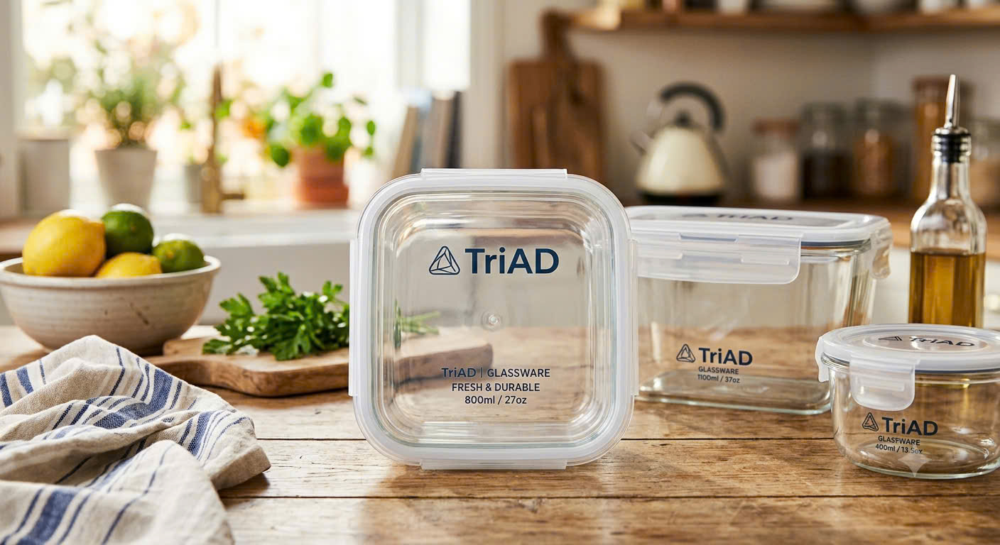
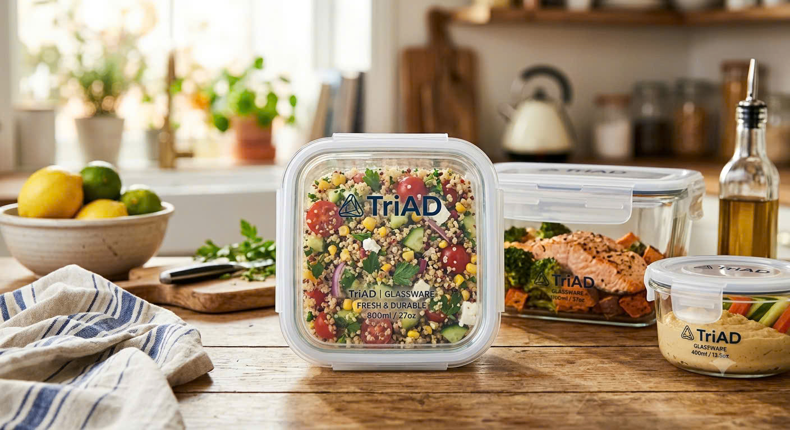

<section id="about" class="py-20 bg-white">
    <div class="max-w-7xl mx-auto px-4 sm:px-6 lg:px-8">
        <div class="text-center mb-12">
            <h2 class="text-sm font-bold tracking-widest text-brand-gray uppercase mb-2">Built on Winter Wonderland</h2>
            <h3 class="text-3xl font-bold uppercase tracking-wider">ABOUT US | TriAD</h3>
        </div>
        <!-- Sử dụng grid-cols-12 để chia tỷ lệ chính xác -->
        <div class="grid grid-cols-1 md:grid-cols-12 gap-8 items-center">
            <!-- Cột nội dung - chiếm 5/12 (~41.6%) gần với 40% -->
            <div class="md:col-span-5 pr-4 md:pr-8">
                <h4 class="text-2xl font-bold mb-6">Our Story</h4>
                <div class="space-y-4 text-brand-gray leading-relaxed text-sm text-justify">
                    <p>TriAD was founded with a simple mission: to make healthy eating more convenient through innovative and sustainable products.</p>
                    <p>We recognized that many people struggle to enjoy fresh, home-prepared meals during busy workdays, often relying on unhealthy fast food. To solve this everyday problem, we created the TriAD ThermoBox—a thoughtfully designed insulated lunch box that keeps meals fresh, warm, and ready to enjoy wherever the day takes you.</p>
                    <p>Our products combine advanced vacuum insulation, food-grade 304 stainless steel, and practical compartment designs to provide a safer, more convenient way to carry homemade meals. By encouraging reusable food containers, TriAD also helps reduce single-use plastic waste and promotes a more sustainable lifestyle.</p>
                    <p>Today, TriAD continues to expand its product line with high-quality food storage solutions, including premium glass containers and everyday kitchen essentials, all designed with the same commitment to quality, durability, and user convenience.</p>
                    <p>We believe that healthier habits begin with small daily choices. Every TriAD product is created to help people eat better, live healthier, and contribute to a more sustainable future.</p>
                    <p class="font-semibold text-black mt-6">Eat Better. Live Healthier. Choose TriAD.</p>
                </div>
            </div>
            
            <!-- Cột hình ảnh - chiếm 7/12 (~58.3%) gần với 60% -->
            <div class="md:col-span-7 relative bg-[#7ec8d4]/20 rounded-3xl p-8 flex items-end justify-end h-[420px] overflow-hidden">
                
                
            </div>
        </div>
    </div>
</section>